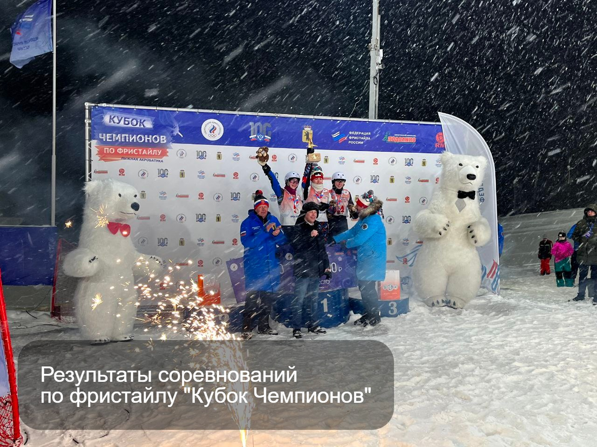

11 — 12 февраля в России в Ярославской области прошли открытые международные соревнования по фристайлу «Кубок Чемпионов» на базе спортивного комплекса «Подолино». В соревнованиях принимают участия около 40 лучших спортсменов из Беларуси и России.
Мужчины: 1 место — Никитин Станислав ( Россия) 2 место — Потапов Артём ( Россия) 3 место — Митрофанов Макар ( Беларусь) Еще один белорусский спортсмен Дребенков Игорь вошел в 5 лучших, заняв 5 место.
По результатам второго дня на « Кубке чемпионов» в Ярославле, белорусские спортсмены в командном зачете завоевали 2 место. Состав команды: Дребенков Игорь, Митрофанов Макар, Деруго Анна.